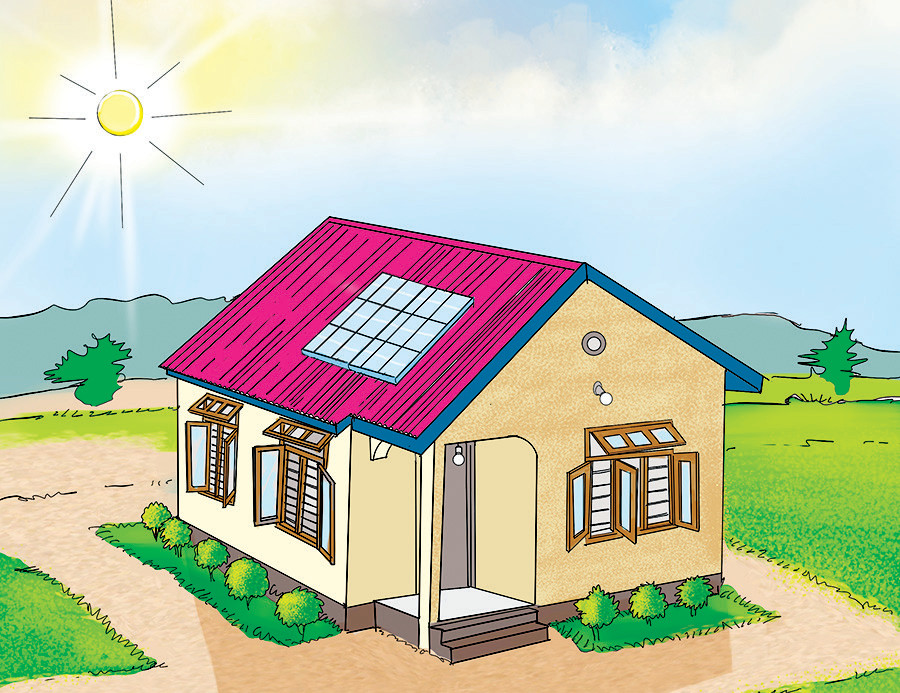
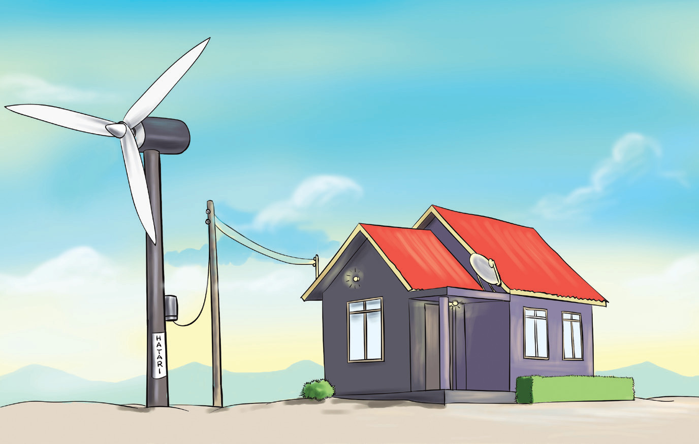

Paneli ya sola
Kielelezo namba 12: Jua na paneli ya sola
Kuzalisha umeme kwa kutumia upepo
Umeme pia huweza kuzalishwa kwa kutumia upepo.Upepo unapovuma, mabapa ya kinuupepo huzungushwa.Kinuupepo ni mashine ya kufua umeme inayotumia msukumo wa upepo.Kasi ya upepo husababisha jenereta lililounganishwa na kinuupepo kuzalisha umeme.Mpaka sasa, mitambo ya kuzalisha umeme huu kwa wingi katika nchi ya Tanzania inapatikana katika mkoa wa Singida.Chunguza Kielelezo namba 13.

Kielelezo namba 13: Kinuupepo kinachotumika kutoa nishati ya umeme.